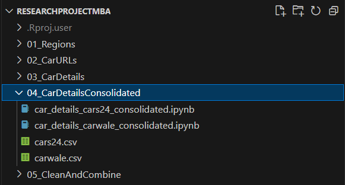

Exploratory Data Analysis (EDA) for Used Cars data.
Author
Vishal Katti
Introduction
After the web-scraping activity is completed, we will now perform exploratory data analysis on the used cars details.
Data Sources
We have 2 CSV files in the 04_CarDetailsConsolidated which we will ingest.

CSV files to be ingested
Ingestion
First we load the required R libraries and create a utility function f
Code
library(readr) # To cleanly ingest the CSV fileslibrary(dplyr) # To wrangle with the datalibrary(stringr) # To efficiently work with character stringslibrary(lubridate) # To manage dates and timeslibrary(janitor) # To ensure consistent naming and other utilitieslibrary(glue) # To enable fancy printinglibrary(ggplot2) # to visualize the dataf <-function(x) { print(glue(x))}
Since will be cleaning and combining 2 datasets, one from cars24 and other from carwale, we will perform same action twice and handle some special cases in either datasets.
Code
cars24 <-read_csv("../04_CarDetailsConsolidated/cars24.csv", na =c("","NA","MISSING","Not Available", "N/A"), show_col_types =FALSE)carwale <-read_csv("../04_CarDetailsConsolidated/carwale.csv", na =c("","NA","MISSING","Not Available","N/A"), show_col_types =FALSE)
“MISSING” values
In our data extraction scripts from the 03_CarDetails folder, you would’ve noticed that while extracting the car attributes, we set the default value to MISSING if the value is not available. Thus we know for a fact that MISSING indicates a missing value and therefore can be explicitly set to NA while reading the CSV files.
After a quick manual verification of CSV files, we also understood that some attributes were Not Available can can be considered as NA.
The read_csv function from readr package allows us to explicitly mention which values to be considered as NA while reading the data.
Duplicates
First thing we will do is eliminate duplicates. We know there are duplicates since we had to restart our web-scraping scripts couple of times due to various issues.
We will use the unique function to remove duplicates.
In above, we can see that fitnessUpto column has character datatype instead of date. We also note that the utility of the websiteUrl column is complete and we can remove this column from the dataset.
tibble [4,355 × 18] (S3: tbl_df/tbl/data.frame)
$ make : chr [1:4355] "Mercedes-Benz" "BMW" "Mercedes-Benz" "BMW" ...
$ model : chr [1:4355] "E-Class [2017-2021]" "6 Series GT" "GLA [2017-2020]" "X7 [2019-2023]" ...
$ variant : chr [1:4355] "E 200 Exclusive [2019-2019]" "630i M Sport [2021-2023]" "200 Sport" "xDrive30d DPE Signature [2019-2020]" ...
$ year : num [1:4355] 2023 2021 2019 2021 2013 ...
$ transmission : chr [1:4355] "Automatic - 9 Gears, Paddle Shift, Sport Mode" "Automatic (TC) - 8 Gears, Manual Override & Paddle Shift, Sport Mode" "Automatic - 7 Gears, Paddle Shift, Sport Mode" "Automatic - 8 Gears, Manual Override & Paddle Shift, Sport Mode" ...
$ bodyType : chr [1:4355] "Sedan" "Sedan" "SUV" "SUV" ...
$ fuelType : chr [1:4355] "Petrol" "Petrol" "Petrol" "Diesel" ...
$ ownerNumber : chr [1:4355] "First" "First" "First" "First" ...
$ odometerReading : num [1:4355] 1630 29000 25000 37500 82000 ...
$ cityRto : chr [1:4355] "DL14C0018" "GJ1233444" "MH0000000" "HR269200" ...
$ listingPrice : num [1:4355] 7350000 6500000 2750000 9800000 555000 ...
$ fitnessUpto : logi [1:4355] NA NA NA NA NA NA ...
$ insuranceType : chr [1:4355] NA "Comprehensive" "Expired" "Expired" ...
$ duplicateKey : logi [1:4355] NA NA NA NA NA NA ...
$ city : chr [1:4355] "Delhi" "Delhi" "Delhi" "Delhi" ...
$ registrationYear : chr [1:4355] "01/01/0001 00:00:00" "01/01/0001 00:00:00" "01/01/0001 00:00:00" "01/01/0001 00:00:00" ...
$ registrationMonth: logi [1:4355] NA NA NA NA NA NA ...
$ websiteUrl : chr [1:4355] "https://www.carwale.com/used-cars/delhi/mercedes-benz-e-class/zzjgvoyd/" "https://www.carwale.com/used-cars/delhi/bmw-6-series-gt/fklf1i6m/" "https://www.carwale.com/used-cars/delhi/mercedes-benz-gla/ncv9atp4/" "https://www.carwale.com/used-cars/delhi/bmw-x7/70grqq3u/" ...
In above, we can see that fitnessUpto column has character datatype instead of date. We also note that the utility of the websiteUrl column is complete and we can remove this column from the dataset. Additionally, the ownerNumber, registrationYear and registrationMonth columns do not match the data type in the cars24 dataset. Let’s fix this.
tibble [4,355 × 17] (S3: tbl_df/tbl/data.frame)
$ make : chr [1:4355] "Mercedes-Benz" "BMW" "Mercedes-Benz" "BMW" ...
$ model : chr [1:4355] "E-Class [2017-2021]" "6 Series GT" "GLA [2017-2020]" "X7 [2019-2023]" ...
$ variant : chr [1:4355] "E 200 Exclusive [2019-2019]" "630i M Sport [2021-2023]" "200 Sport" "xDrive30d DPE Signature [2019-2020]" ...
$ year : num [1:4355] 2023 2021 2019 2021 2013 ...
$ transmission : chr [1:4355] "Automatic - 9 Gears, Paddle Shift, Sport Mode" "Automatic (TC) - 8 Gears, Manual Override & Paddle Shift, Sport Mode" "Automatic - 7 Gears, Paddle Shift, Sport Mode" "Automatic - 8 Gears, Manual Override & Paddle Shift, Sport Mode" ...
$ bodyType : chr [1:4355] "Sedan" "Sedan" "SUV" "SUV" ...
$ fuelType : chr [1:4355] "Petrol" "Petrol" "Petrol" "Diesel" ...
$ ownerNumber : num [1:4355] 1 1 1 1 1 2 1 1 2 1 ...
$ odometerReading : num [1:4355] 1630 29000 25000 37500 82000 ...
$ cityRto : chr [1:4355] "DL14C0018" "GJ1233444" "MH0000000" "HR269200" ...
$ listingPrice : num [1:4355] 7350000 6500000 2750000 9800000 555000 ...
$ fitnessUpto : Date[1:4355], format: NA NA ...
$ insuranceType : chr [1:4355] NA "Comprehensive" "Expired" "Expired" ...
$ duplicateKey : logi [1:4355] NA NA NA NA NA NA ...
$ city : chr [1:4355] "Delhi" "Delhi" "Delhi" "Delhi" ...
$ registrationYear : num [1:4355] NA NA NA NA NA ...
$ registrationMonth: num [1:4355] NA NA NA NA NA NA 12 12 6 NA ...
Comparing the datatypes of the two datasets using waldo::compare function confirms that both datasets have same columns and datatypes and thus, can be combined together for futher clean-up.